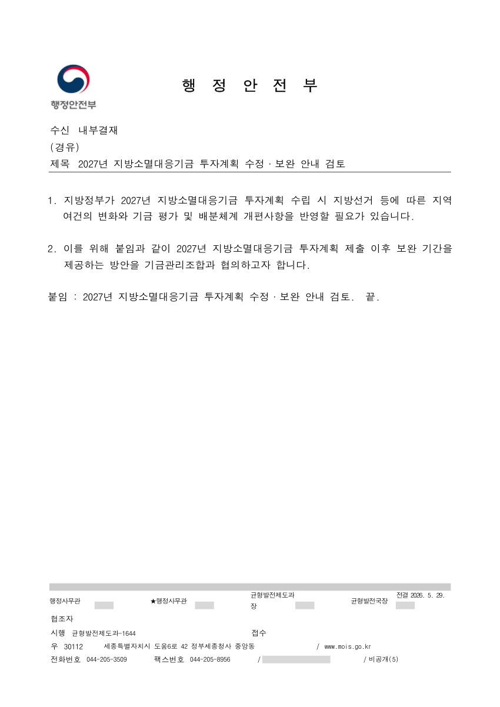
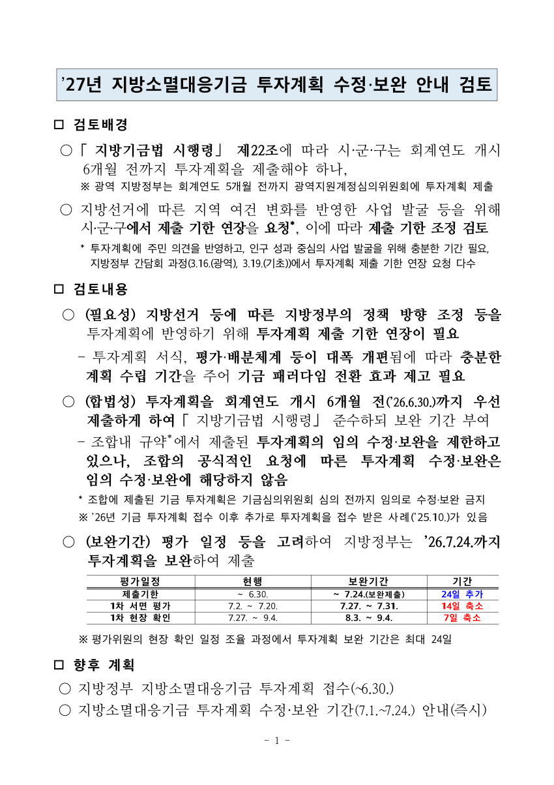
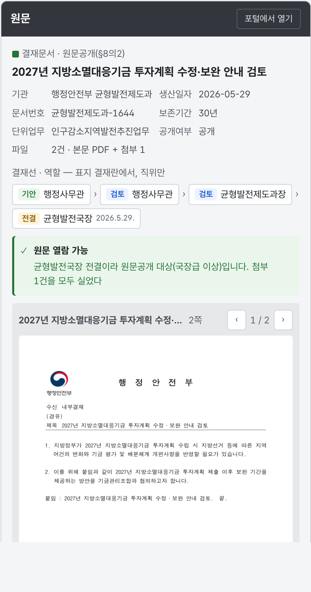
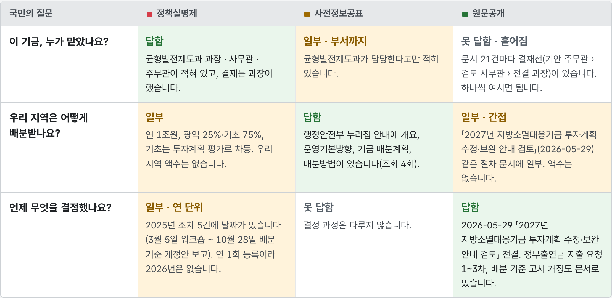
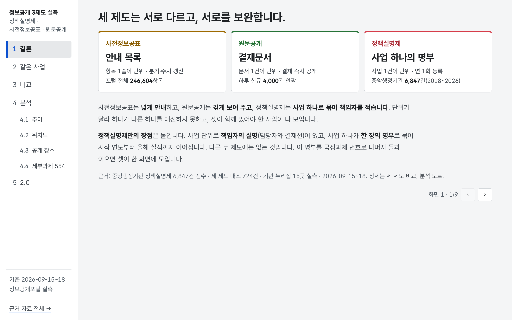

지방소멸대응기금
해마다 1조 원이 지역으로
누가 맡았나 ·
무엇을 결정했나국민은 어디서 볼 수 있을까요
무엇을 결정했나국민은 어디서 볼 수 있을까요
정부는 세 창구로 답합니다
사전정보공표
안내 목록
항목 1줄이 단위 · 분기·수시 갱신
원문공개
결재문서
문서 1건이 단위 · 결재 즉시 공개
정책실명제
사업 하나의 명부
사업 1건이 단위 · 연 1회 등록
실제 화면 · 정보공개포털
정책실명제
중점관리대상사업 상세
중점관리대상사업 상세
사업 1건 = 명부 1장
담당자 3 · 결재선 · 선정기준 국정과제
조치 5건 · 날짜 있음 · 조치마다 결재선
관련 문서 21 · 원문 0
실제 화면 · 행정안전부 누리집
사전정보공표
업무안내 › 지방소멸대응기금
업무안내 › 지방소멸대응기금
추진계획 · 운영 절차 · 배분 규모
넓게 안내합니다
결정 과정 · 문서 — 없음
실제 화면 · 정보공개포털
원문공개
원문정보 상세
원문정보 상세
2026.05.29 · 균형발전제도과-1644
본문 PDF · 붙임 hwpx · 보존 30년 · 공개


실제 문서 · 결재문서
표지
수신 내부결재 · 2027년 투자계획 수정·보완 안내 검토
수신 내부결재 · 2027년 투자계획 수정·보완 안내 검토
결재란 · 기안부터 전결까지 4명
기안행정사무관
검토행정사무관
검토균형발전제도과장
전결균형발전국장 2026.5.29.
원문공개 대상국장급 이상 전결
첨부 · 검토서 1쪽
검토배경 · 검토내용 · 향후 계획
가장 깊습니다

그런데 정책실명제 카드는
이 문서를 모릅니다
이 문서를 모릅니다
카드 ↔ 문서 · 서로 가리키지 않음
PART 1세 얼굴

같은 사업 · 세 질문
누가 맡았나
정책실명제 답함 · 사전정보공표 부서까지 · 원문공개 흩어짐
어떻게 배분받나
사전정보공표가 답함
언제 무엇을 결정했나
원문공개만 답함
사업항목문서
단위가 다릅니다 — 하나가 다른 하나를 대신하지 못합니다
2026년
카드 없음
22건 문서는 있음
원문공개 1 · 정보목록 21
원문공개 1 · 정보목록 21
원문 0
비공개 18 · 과장 전결이라 대상 아님 3
비공개 18 · 과장 전결이라 대상 아님 3
있는데, 못 보는 문서
2.0 구상

정책실명제 — 뼈대사업 단위 · 책임자 · 해마다 카드
사전정보공표 — 안내누리집 항목이 카드에 붙음
원문공개 — 문서결재문서가 생산 연도에 붙음
사전정보공표 1
원문공개 2
원문공개 1 · 정보목록 21
빨강 · 금색 · 초록이
한 화면에세 제도가 한 사업으로 조합됩니다
한 화면에세 제도가 한 사업으로 조합됩니다
실제 화면 · 2.0 구상
카드의 한 줄을 누르면
정책실명제 조치 ’25.10.28
「배분 기준」 개정(안) 보고
「배분 기준」 개정(안) 보고
원문공개 같은 이름의
2023년 결재문서가 열립니다
2023년 결재문서가 열립니다
지금은 사람이 제목으로 맞춘 것
2.0 구상
정책실명제 명부사업 단위 · 책임자
사전정보공표 안내항목 단위
원문공개 문서결재문서 · 결재선
열쇠국정과제 54세부과제 54-1 · 결재할 때 고름
한 사업
지방소멸대응기금
책임자 · 해마다 카드누리집 안내결재문서 · 원문
새 번호를 만들지 않음 · 결재 때 고름 · 없는 것도 없다고 보임

결론
세 제도는 서로 다르고,
서로를 보완합니다
서로를 보완합니다
정책실명제만의 것 둘
사업 단위의 책임자
한 장의 명부
한 장의 명부
여기에 원문이 붙으면, 한 사업이 다 보입니다
같은 사업의 세 얼굴
정보공개 세 제도 실측
정책실명제사전정보공표원문공개
hosungseo.github.io/open-go-corpus
기준 2026-09-15~18 · 정보공개포털 실측 · 결재선은 직위만
정책실명제 — 사업 단위 · 책임자 · 관련 문서 21, 원문 0
사전정보공표 — 항목 단위 · 안내 · 결정 과정 없음
원문공개 — 문서 단위 · 결재선 · 카드와 연결 없음
단위가 다릅니다 — 사업 · 항목 · 문서
있는데 못 보는 문서 21건 — 원문 0
정책실명제(뼈대) + 사전정보공표(안내) + 원문공개(문서)
국정과제 번호 하나로 — 세 제도가 한 사업에
정책실명제만의 것 — 사업 단위 책임자 · 한 장의 명부